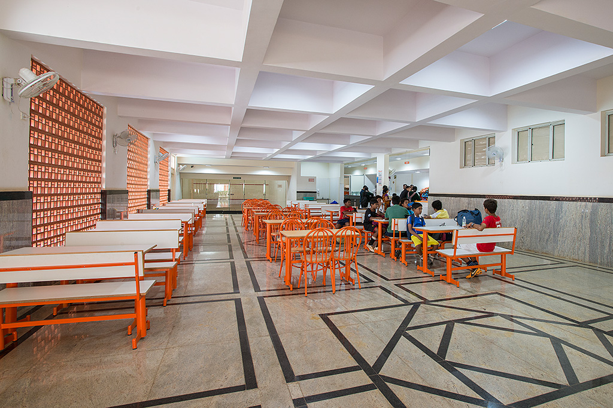

campus life
school library
This is the school library of DPS. Students can read different types of books and gain more knowledge.

science lab
This is the science lab of DPS. Here students can learn seeing small particles using microscope. Students who are in grade 6 or above can only enter the science lab.

computer lab
This is the computer lab of DPS. Here students learn using windows, basics of scratch etc.
school achievements
Delhi Public School, Raipur won 14 Gold, 2 Silver, 4 Bronze medals at the National level CBSE Far East Zone Inter school Judo Competition in U-11, U-14 and U-17 categories held from 6th to 8th September. Gold medal winners: Asmi Sahu, Amulya Kujur, Chahana Khatore, Aalya Talreja, Harisha Chandrakar,Aayush Mani, Mainak Dutta, Pari Rajput, Avi Katre, Arya Singh, Ayushi Joshi, Palak Singh and Minakshi Nair Silver medal winners: Nityam Rathore and Avni Dwivedi Bronze medal winners: Kushal Khand
Aadi Parakh of Delhi Public School, Raipur, proved his mettle yet again by securing Allen Champ Rank 3 from class IV in India. Aadi already has a number of national and international trophies and citations from prestigious competitive exams like IMO and IEO under his belt. Aadi was awarded a cheque worth ₹50,000 and a pure gold coin of 5 gms. The school has won school of schools award for six consecutive years. It is a state level competition organized by Rotary Cosmopolitan.
What's New
-
New School Canteen
The food options and responsibilities to consider, canteens must be better organised and more efficient than they have been in the past. Online menus with photographs of the meals prepared, and detailed descriptions of their ingredients help both students and parents make the right nutritional choices. Each student or staff member who accesses the canteen could be provided with a School Canteen Account on the school website that keeps track of their previous meal choices and any dietary requirements they may have. Ordering online by ticking a box and paying for meals online can eliminate all the fuss of money handling, making it safer and less complicated for staff and students alike. Here again, diversity is the key.
-
Big Playground
A huge play ground is fully utilized by our students in their games period which is allotted in the time table . The student are accompanied by two games teachers who teach different types of indoor and outdoor games. Different equipments are provided for junior student (N to Class II). They are also trained to play different games like standing rally, passing the ball etc. Senior students are interested to play relay race, kabadi, kho-kho, badminton , cricket , volley ball, passing the ball, football as outdoor games. A room for indoor games like Table-Tennis, Carrom, Chess is also utilized by the students. Keeping the programmes (Annual sports, march past for independence day) in mind, the students are trained by the games teacher from the beginning of the session. "Healthy mind in a healthy body" is our motto which is followed in every step of our school curriculum.
Our Alumni
ambika anand
nandini bajpai
rohit bal
ankit fadia